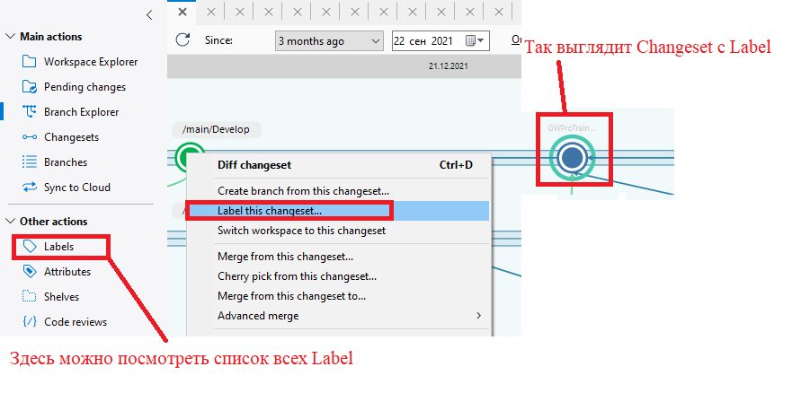
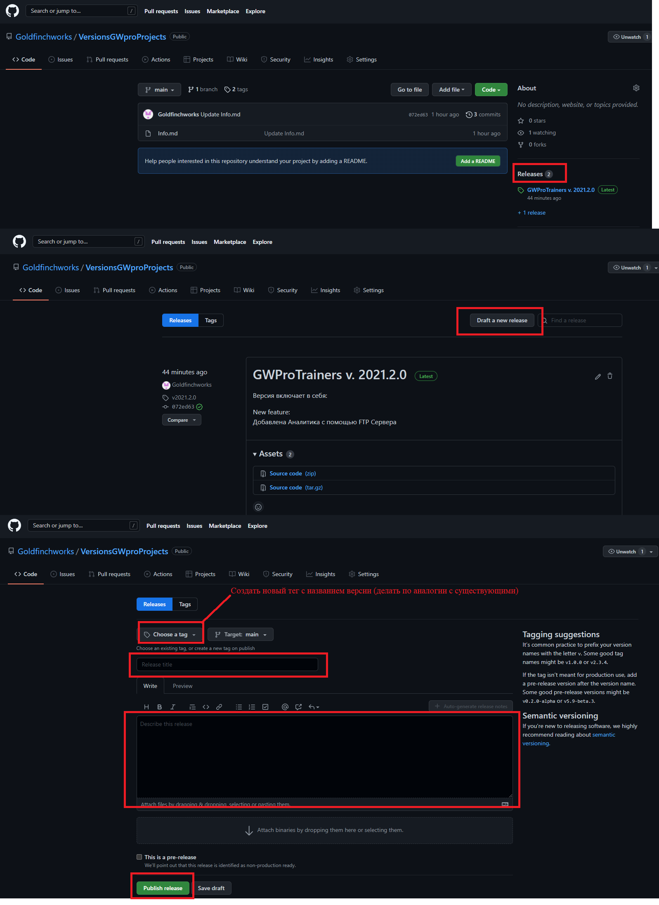

Порядок регистрации новых версий в ветке Development
Вся работа над новыми тренажерами, инструментами, фичами должна производится в отдельной ветви которая исходит из ветки Development.
Когда цикл разработки нового модуля окончен (полностью протестирован, задокументирован и.т.д), ветку, в которой происходила работа необходимо залить в Development (если в Development за время разработки произошли изменения то обновится протестировать, если нужно внести правки в соответствии с новыми изменениями).
Это действие считается релизом, после успешного вливания изменений в Development, ему присваивается версия. Порядок присваивания:
3 числа
Пример: 2021.3.7
- 2021-год
- 3-изменения в общих файлах, проверяются только по изменению develop. Добавили новую фичу + к версии. Изменили код внутри общих модулей + к версии. Новый тренажер + к версии... При изменении этого числа, третье число сбрасывается
- 7-изменения в тренажерах, которые прошли в develop. Например, правки.
Если это версия для клиента, которая не будет вливатся в Development, то в начале должно быть наименование компании клиента
Пример: ИЛИМ_2021.3.7
После определения версии необходимо добавить Label в Plastic с названием новой версии проекта и описанием изменений.

А так же необходимо добавить в проект с описанием версий название и описание новой версии в файлик Info.md
после изменения файлика info.md необходимо заполнить описание релиза:
